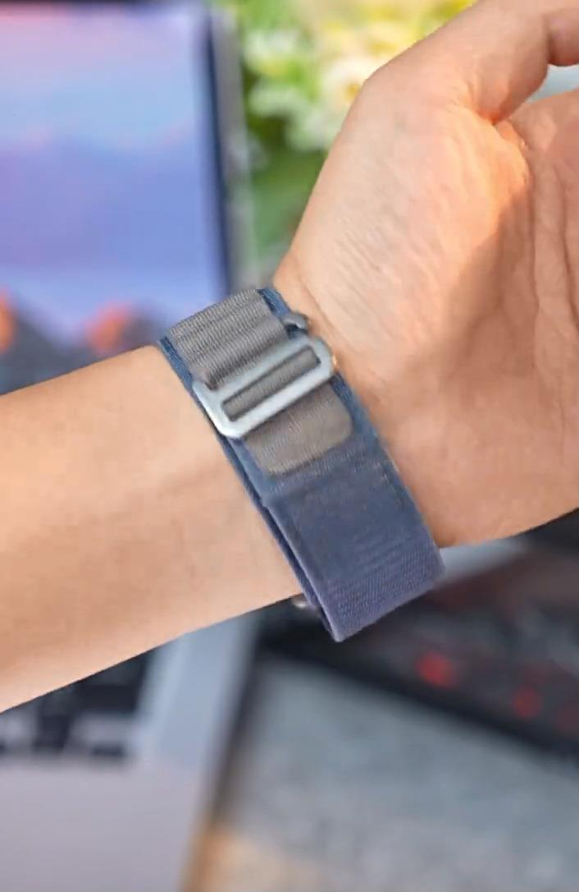
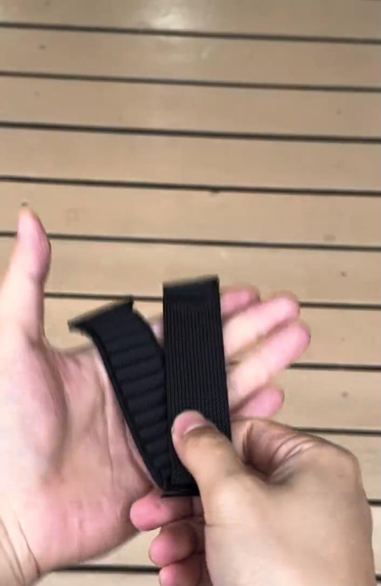
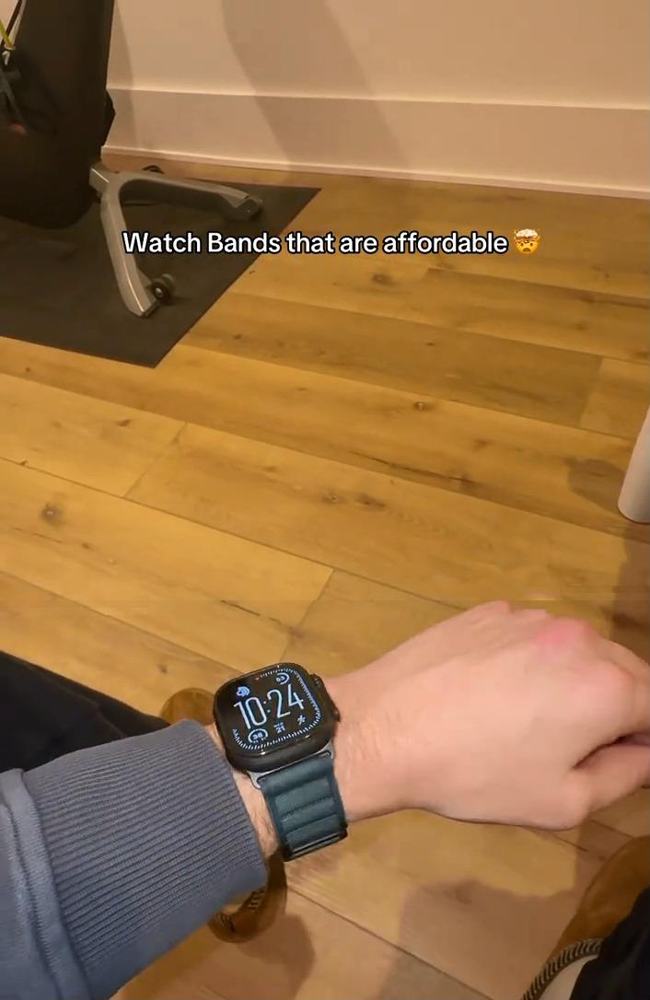

Creator Collaboration Brief
Lightweight Nylon, Sporty Outdoor Look
A lightweight, breathable nylon watch band that gives your smart watch a sporty outdoor look.
Key Selling Points
How to film the first 3 seconds
Give viewers an instant contrast: the basic band feels plain, then the nylon band turns the watch into a sporty outdoor look.



Content Production Sequence
Build the video around a new look, lightweight breathability, comfortable fit, and one clear size reminder.
Hook
Before and After
Material Proof
Wearing Proof
Color Display
Close With CTA
Restricted Wording
You can say
- compatible with Apple Watch
- smart watch band
Do not say
- This is an Apple watch band
Product-specific wording note
Do not call it official, original, waterproof, scratch-proof, pure titanium, or guaranteed durable. Safer phrases: Alpine Loop-style, outdoor sport style, nylon sport style, compatible with selected models, breathable for workouts, and budget-friendly style change.
Creator Deliverable Checklist
Deliver one vertical TikTok Shop video that sells a summer-ready style upgrade: lighter, more breathable, more sporty, and easier to adjust. Keep compatibility and size reminders visible before the CTA.